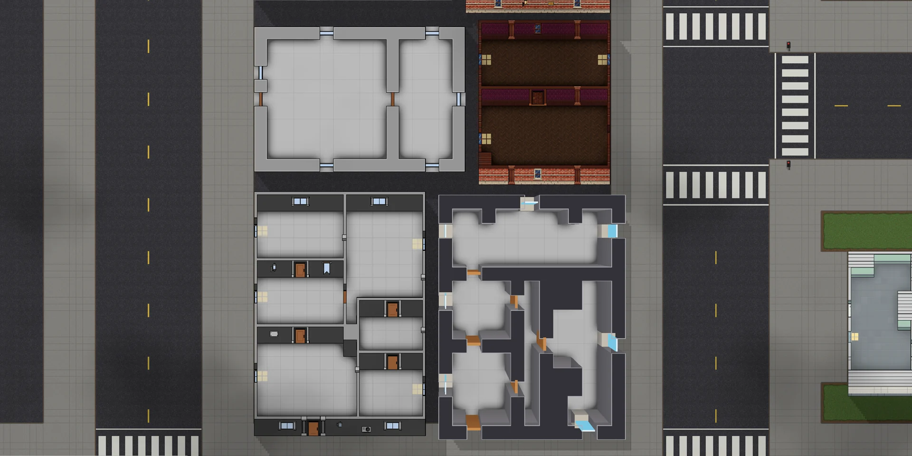
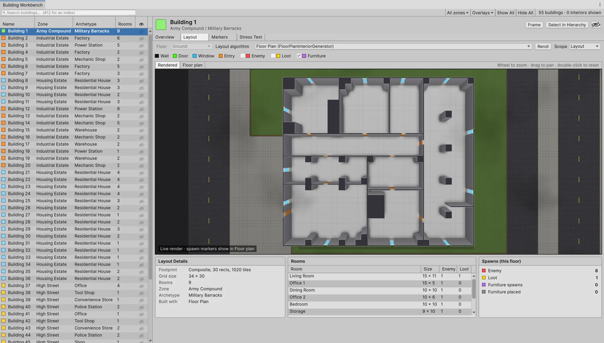
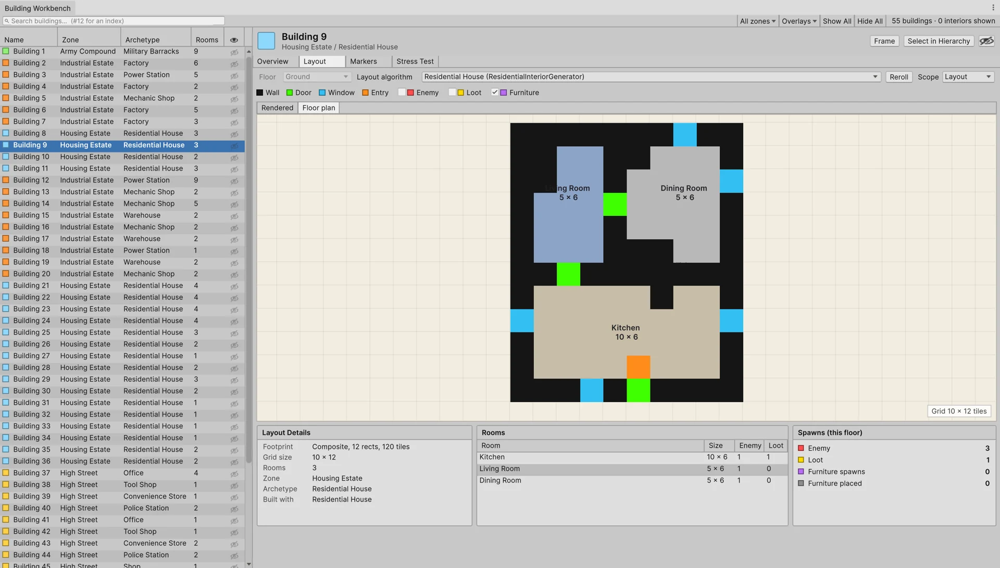
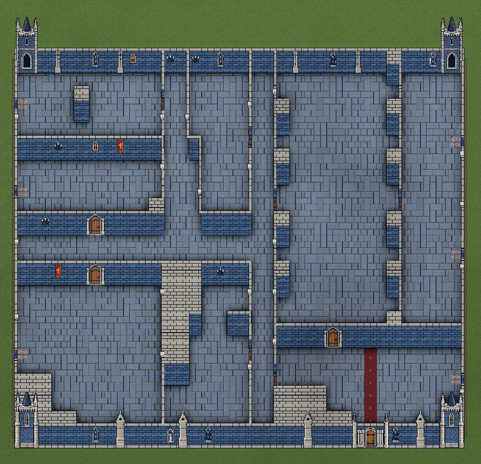
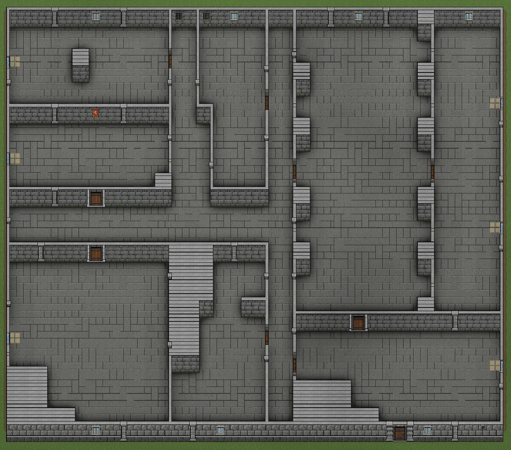
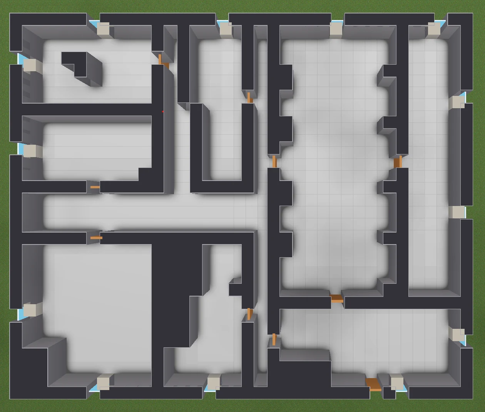
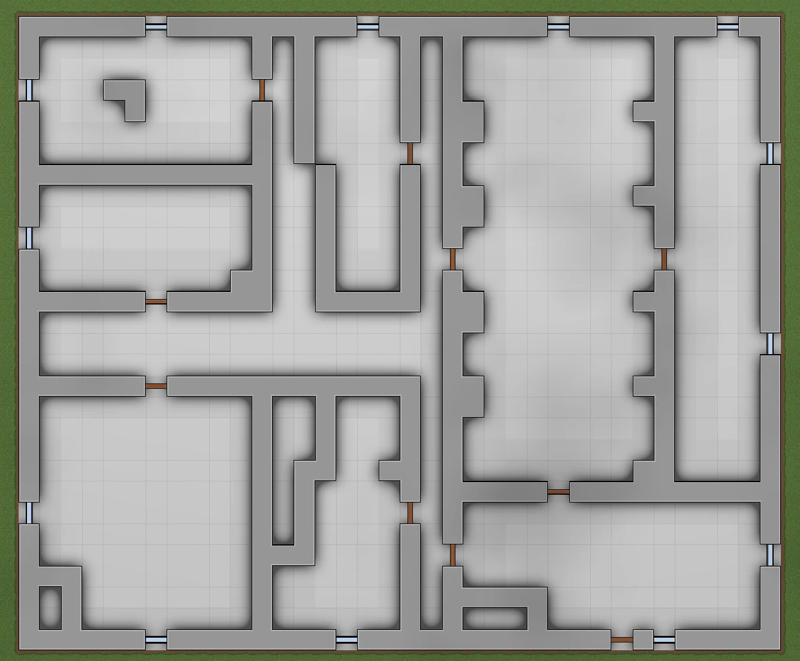
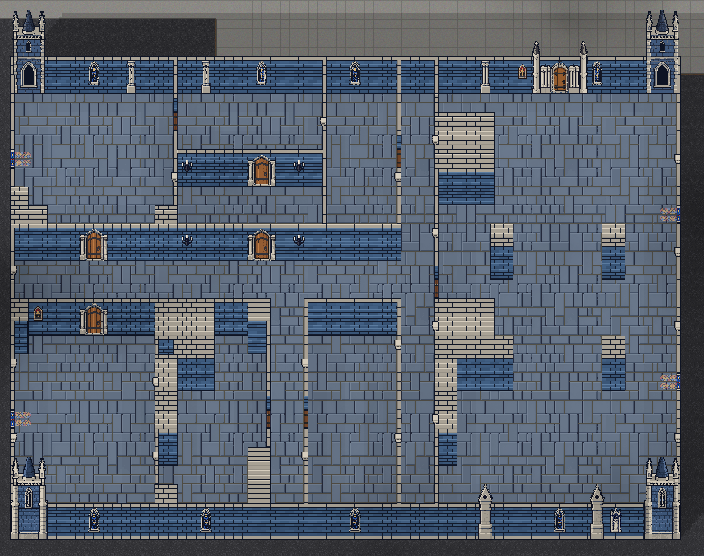
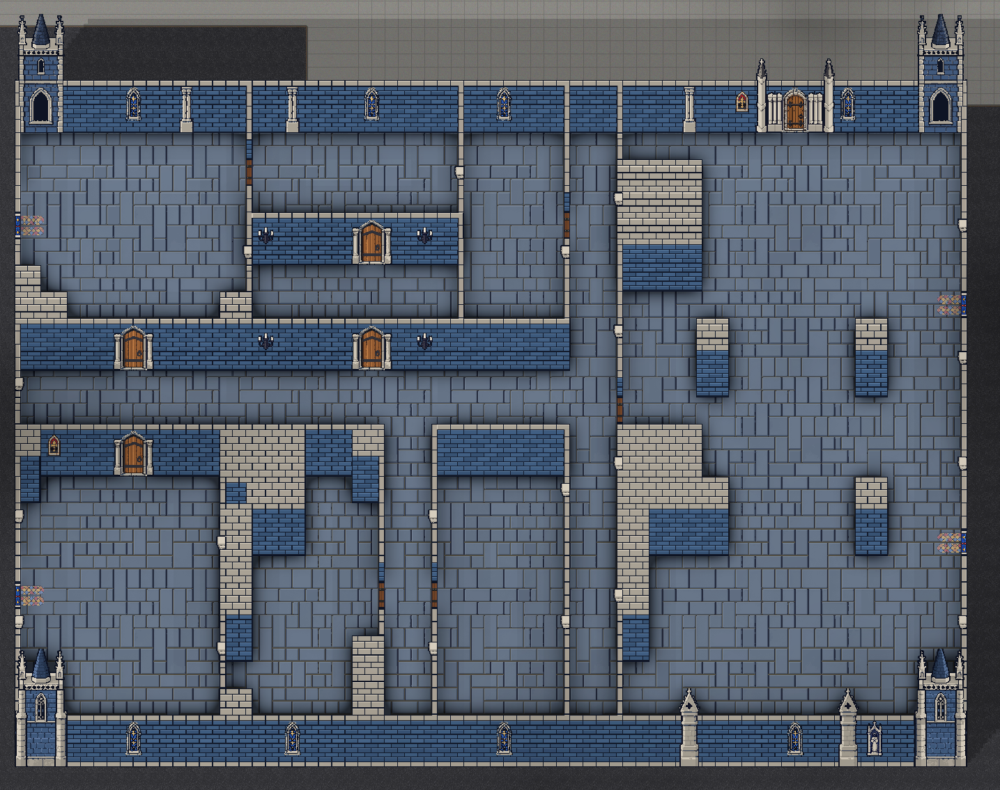

Composable world pipeline
A seeded pipeline composes terrain, roads, blocks, zones, lots, buildings and interiors into world data. The scene bootstrap and headless tools share the same processor composition.
Independent project · Work in progress
Work in progress. This Unity Asset Store package is not yet released. Features, visuals and names may change.
A procedural generation toolkit for Unity, covering worlds, roads, districts, buildings and interior layouts, with editor tools for inspecting the generated results.
Core features
WorldGeneratorPro builds seeded 2D world and building layouts, then keeps rendering and editor inspection as separate concerns. Its current pipeline covers the route from terrain and roads to interior rooms, openings and props.
A seeded pipeline composes terrain, roads, blocks, zones, lots, buildings and interiors into world data. The scene bootstrap and headless tools share the same processor composition.
Road, zone, lot and building stages turn a seed into a structured city layout. Building archetypes and interior profiles supply layout rules while keeping the generated footprint, rooms, walls, doors and windows available as data.
Residential and floor-plan strategies share a common interior data contract. Boundary and room-connectivity data supports queries for rooms, openings, passable neighbours and travel distance without reconstructing topology from rendered tiles.
The editor Workbench can search and filter generated buildings, switch between rendered and floor-plan views, inspect rooms and markers, reroll selected scopes, and stress-test repeated layouts for validation and preview-to-world parity.
Generation data is rendered through replaceable painter assets. The current package includes edge-aligned 3/4 and top-down blob tile rendering, plus a prototype perspective mesh view. Named atlas pieces, configurable 3/4 atlas layouts and validated cell sizes keep art mapping outside generation code.
The world renderer bakes exterior building shadow masks and per-building interior ambient occlusion. Scene view controls adjust the shadow direction and length while inspecting generated results.
World generation
The tool combines procedural world layouts with roads, zones and generated buildings. The screenshots show different building footprints and interior layouts within the same generated world.


Building Workbench
The Building Workbench lists generated buildings and lets their room layouts be inspected as rendered interiors or floor plans. The views show room sizes, doors, windows, entry points and spawn markers alongside the selected building.


Rendering
Generation data is separate from rendering. These examples show tile-based themes and top-down or perspective wall treatments applied to building layouts.




Lighting and shadows
Baked interior ambient occlusion adds contact shadows around walls, corners and furniture.


AO onAO offSun shadow preview
The shadow system sweeps baked building footprints away from the sun. Direction rotates the cast shadow; length controls how far it extends.
This browser preview mirrors the package’s Scene view controls, with baked interior ambient occlusion enabled.

Sun from: 0° east · 90° north
Art workflows
I am developing custom art templates alongside the generator. The Atlas Layout Editor maps named wall and overlay pieces to cells on a sprite sheet, supporting custom cell sizes and sheet layouts within the package’s art contracts.
Art mapping is stored as data, so supported layouts can be configured without changing generation code.
More tools